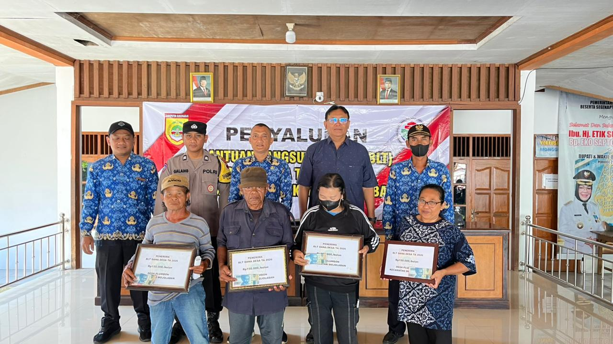
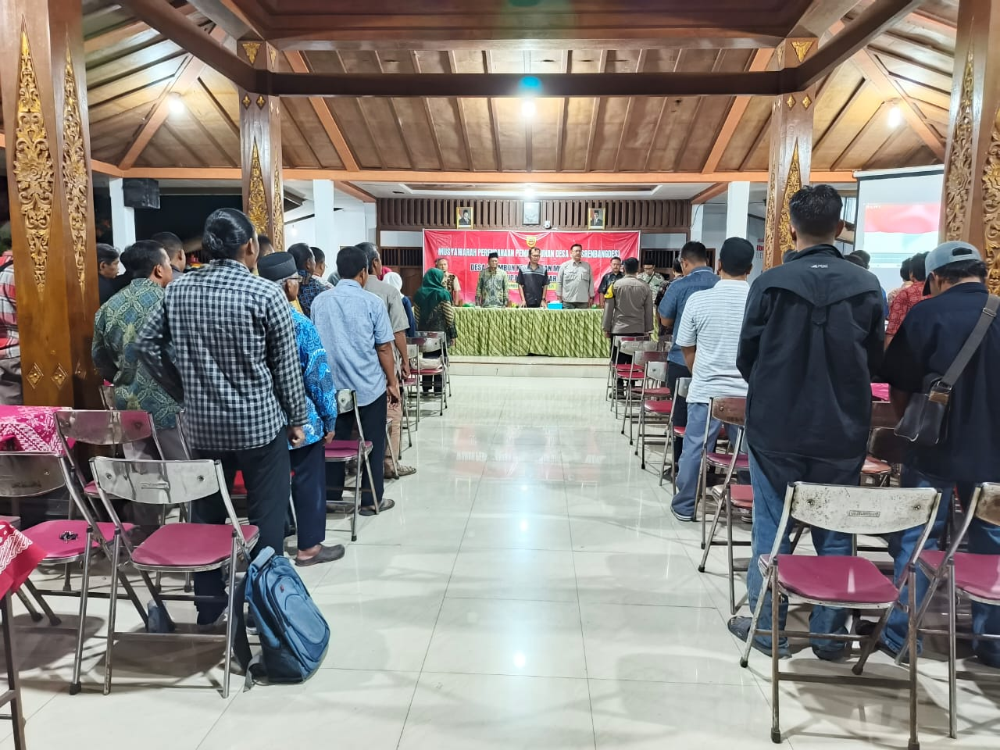
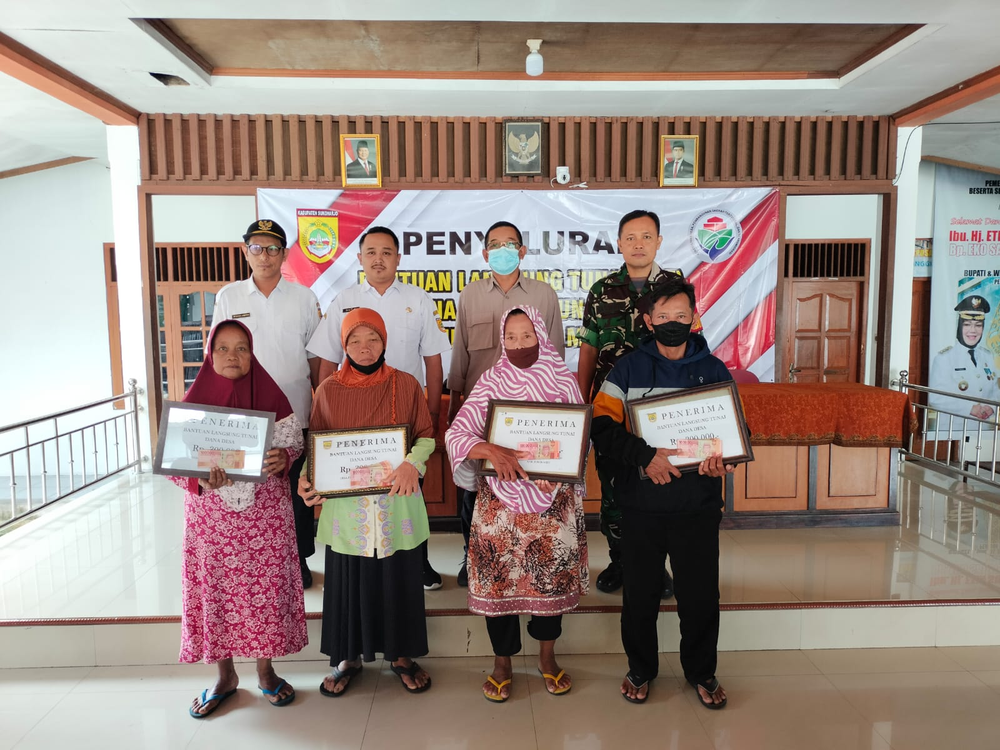
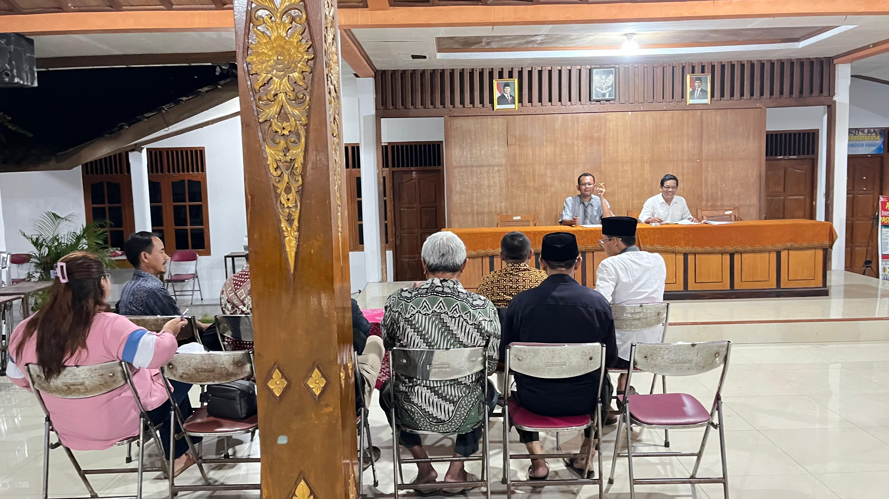
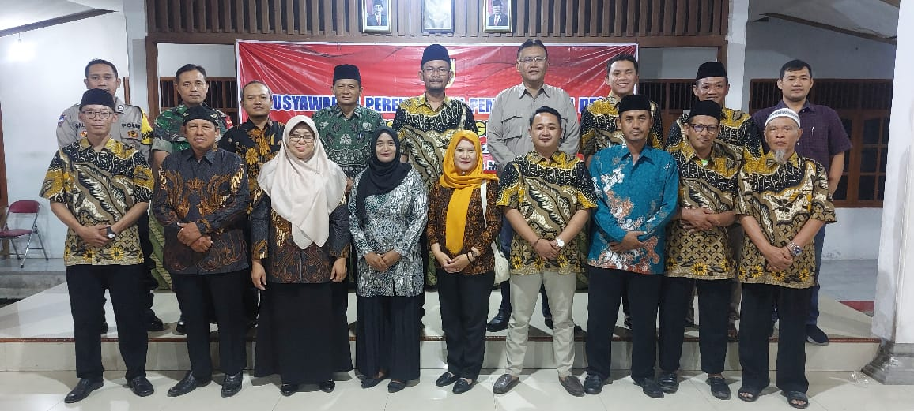
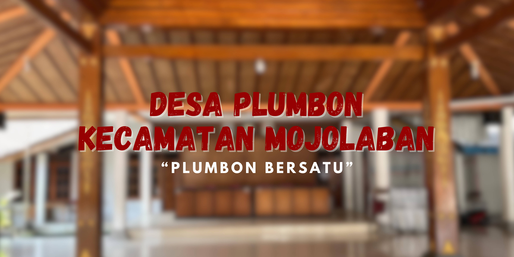
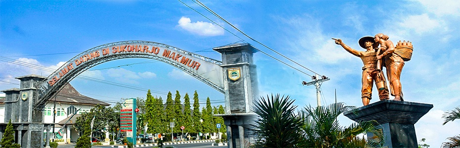

Galeri Foto Dokumentasi Desa Plumbon
Dokumentasi Otentik Kegiatan Musrenbangdes, Tradisi Harlah 1741 M, Pengabdian KKN, dan Potensi Wilayah
- Semua Koleksi (8)
- Pemerintahan & Musdes (3)
- Budaya & KKN (3)
- Pertanian & Balai Desa (2)


Malam Tirakatan Harlah Desa
Refleksi sejarah berdirinya Desa Palumbon (1741 M) bersama jajaran perangkat dan tokoh masyarakat.


Kolaborasi Mahasiswa KKN
Pendampingan program pemberdayaan warga dan edukasi masyarakat bersama mahasiswa KKN.

Kegiatan PKK & Kemasyarakatan
Aktivitas kader kesehatan, PKK, dan pemberdayaan ekonomi keluarga di Desa Plumbon.


Rapat Koordinasi Perangkat & BPD
Evaluasi berkala penyelenggaraan pemerintahan dan pelayanan publik Desa Plumbon.


Forum Musrenbangdes Plumbon
Penyusunan rencana kerja pembangunan desa secara partisipatif bersama perwakilan warga.


Sinergi Aparatur & Warga
Kebersamaan pamong desa dan lembaga kemasyarakatan dalam kegiatan desa.


Kantor Kepala Desa Plumbon
Gedung pusat pelayanan administrasi warga di Dukuh Plumbon Kulon.


Lumbung Padi Sawah (147 Ha)
Hamparan lahan pertanian subur di sebelah timur aliran Sungai Bengawan Solo.